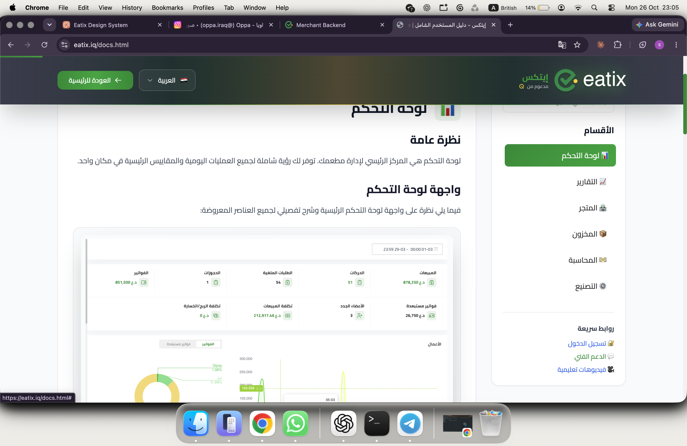
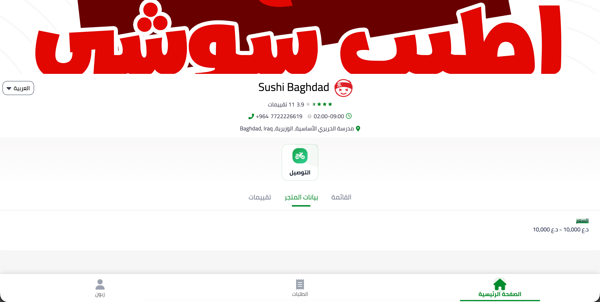
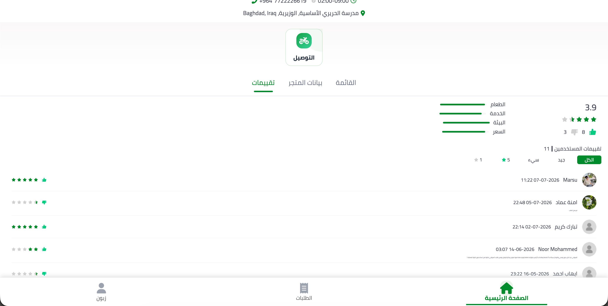
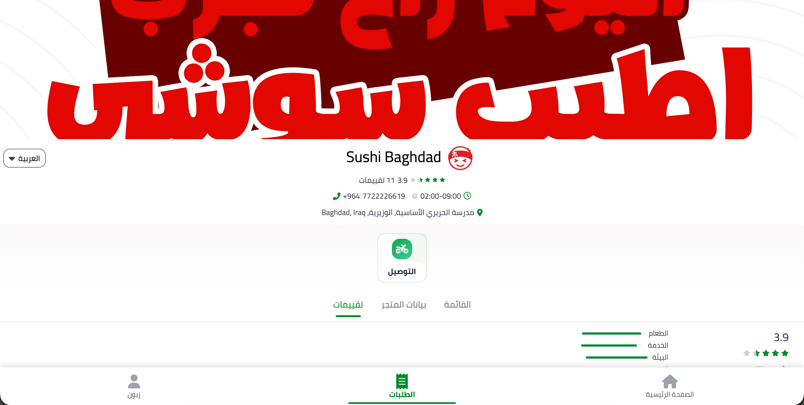
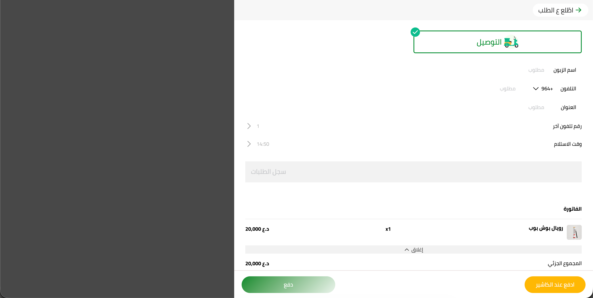
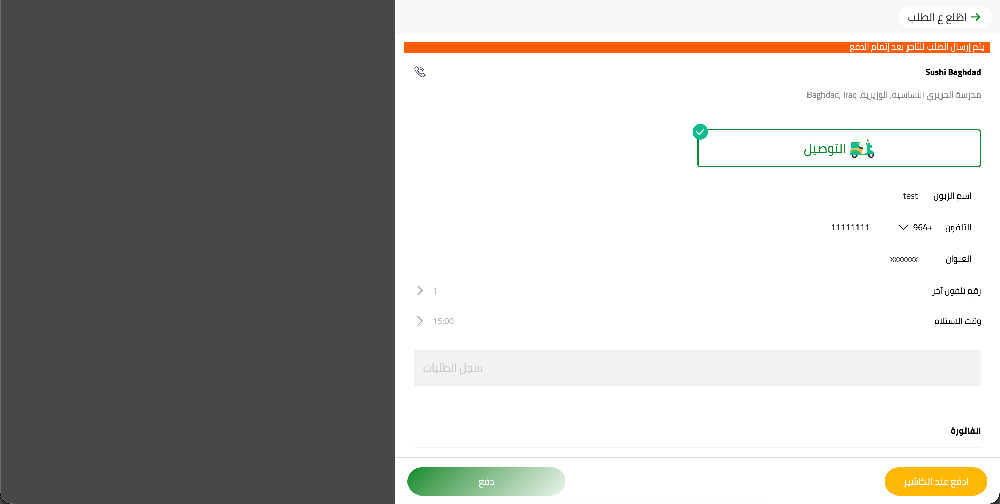
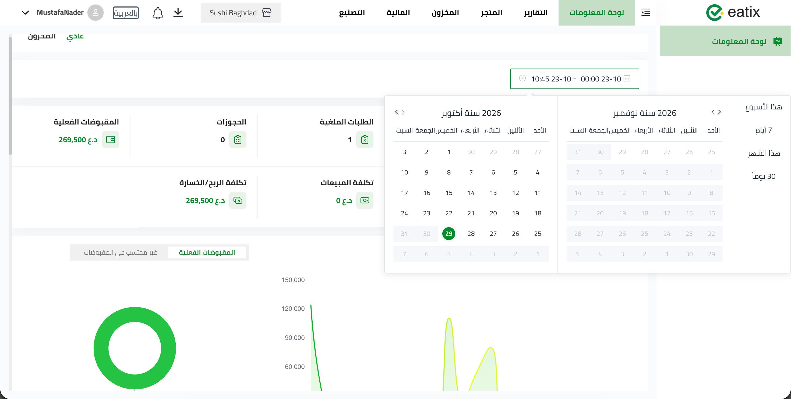
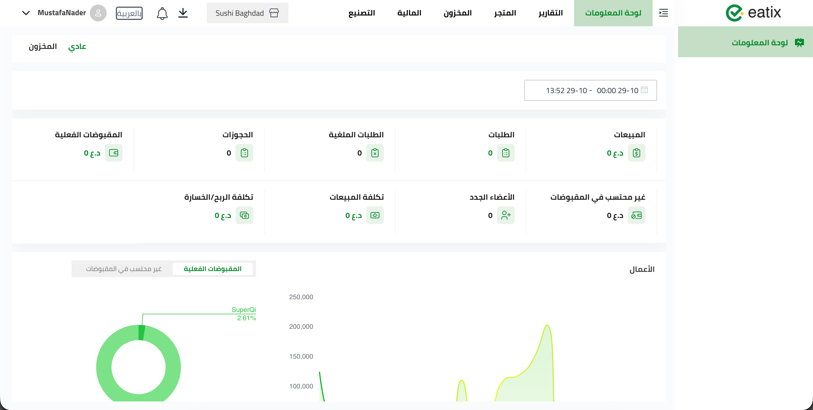
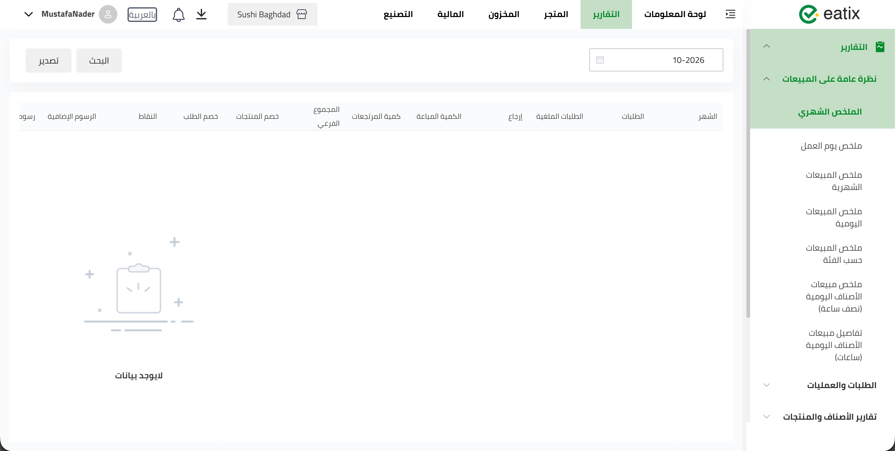
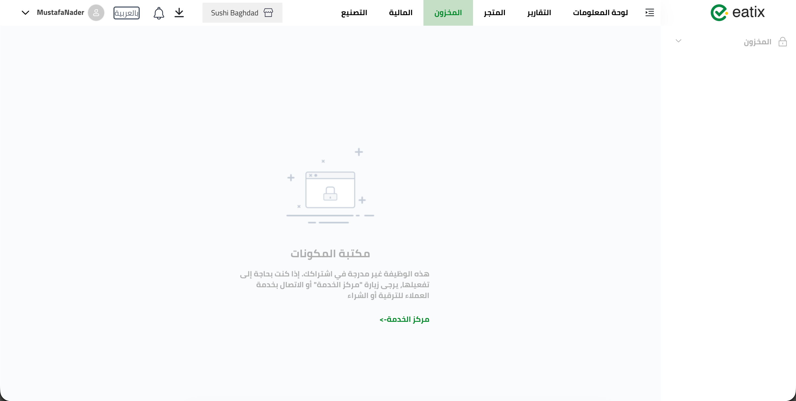

ماذا وجدنا، وكيف نصلحه
A hands-on review of the Eatix website, digital menu and back-end. One finding per page, with a screenshot or recording.
مراجعة عملية لموقع إيتكس، والمنيو الرقمي، ولوحة التحكم. ملاحظة واحدة في كل صفحة، مع صورة أو تسجيل.

On eatix.iq/docs.html, "Technical Support" links to "#". A merchant who needs help gets nothing.
Link it to WhatsApp or a help form. Put the same link in the site footer and the back-end header.
في صفحة الوثائق، رابط "الدعم الفني" لا يفتح شيئاً.
اربطوه بواتساب أو نموذج مساعدة. ضعوا نفس الرابط في أسفل الموقع وفي أعلى لوحة التحكم.
Tap a dish and you see its details, but there is no "Add to order" button. The customer is stuck.
Add a fixed "Add to order" button with the price at the bottom of every item page.
عند الضغط على الصنف تظهر تفاصيله، لكن لا يوجد زر "أضف للطلب". الزبون يتوقف هنا.
أضيفوا زر "أضف للطلب" ثابتاً مع السعر في أسفل كل صفحة صنف.
The item page has a text box called "Comments". Customers think it is feedback, not a way to change the dish.
Call it "Special requests" with a hint: "e.g. no onions, extra sauce".
في صفحة الصنف مربع اسمه "تعليقات". الزبون يظنه رأياً، لا طلباً لتعديل الصنف.
سمّوه "طلبات خاصة" مع مثال: "بدون بصل، صوص إضافي".
A delivery icon at the top opens a separate delivery menu. Nothing shows it is a button.
Show three clear choices: Eat in · Delivery · Collection. The restaurant picks which ones to offer.
أيقونة التوصيل في الأعلى تفتح منيو توصيل منفصلاً. لا شيء يدل على أنها زر.
اعرضوا ثلاثة خيارات واضحة: في المطعم · توصيل · استلام. والمطعم يختار ما يناسبه.

The Shop info tab shows auto-generated text, like a price range "10,000 ~ 10,000 IQD". It is not accurate.
Let the restaurant write this tab from the back-end. Hide it if empty.
تبويب "بيانات المتجر" يعرض نصاً تلقائياً مثل "السعر 10,000 ~ 10,000". غير دقيق.
دعوا المطعم يكتب هذا التبويب من لوحة التحكم. وأخفوه إن كان فارغاً.

Stars (3.9) and thumbs up/down (8 / 3) show side by side. They can disagree. Restaurants cannot challenge a false review.
Keep stars only. Add "Report review" in the back-end so the restaurant can dispute a false or unrelated review.
النجوم (3.9) وأعجبني/لم يعجبني (٨/٣) تظهر معاً وقد تتعارض. ولا يستطيع المطعم الاعتراض على تقييم كاذب.
أبقوا النجوم فقط. وأضيفوا زر "الإبلاغ عن تقييم" في لوحة التحكم ليعترض المطعم على التقييم الكاذب.


The shop opens 02:00–09:00, but checkout offered a delivery or collection time of 14:50, when it is closed.
Allow ordering any time, but only offer slots from 30 minutes after opening to 30 minutes before closing. Grey out the rest.
المطعم يفتح من ٢:٠٠ إلى ٩:٠٠، لكن الدفع عرض وقت توصيل أو استلام ١٤:٥٠ وهو مغلق.
اسمحوا بالطلب في أي وقت، لكن اعرضوا أوقات الاستلام فقط من بعد الفتح بنصف ساعة إلى قبل الإغلاق بنصف ساعة. وعطّلوا الباقي.

Checkout asks for a second phone number. Most people skip it or type junk. It is one more step before paying.
Remove it. One number is enough.
صفحة الدفع تطلب رقم هاتف ثانياً. أغلب الناس يتجاوزونه أو يكتبون أي شيء. خطوة زائدة قبل الدفع.
احذفوه. رقم واحد يكفي.
We tapped Pay. No money was taken, but the order was accepted. Also: none of our Qi test payments reached the restaurant account.
Create the order only after payment is confirmed. On failure show "Payment not completed" with retry. Reconcile Qi payments against payouts before wider rollout.
ضغطنا "دفع". لم يُسحب أي مبلغ، لكن الطلب قُبل. كذلك: لم تصل أي من دفعات Qi التجريبية إلى حساب المطعم.
أنشئوا الطلب فقط بعد تأكيد الدفع. وعند الفشل اعرضوا "لم يكتمل الدفع" مع إعادة المحاولة. وطابقوا دفعات Qi مع التحويلات قبل التوسع.

The date picker offers this week, 7 days, this month, 30 days. No quarter, no year, no "compare with last year".
Add This quarter · This year · Last 12 months, and a "compare with last year" toggle.
اختيار التاريخ يعرض: هذا الأسبوع، ٧ أيام، هذا الشهر، ٣٠ يوماً. لا ربع سنة، لا سنة، لا مقارنة مع السنة الماضية.
أضيفوا: هذا الربع · هذه السنة · آخر ١٢ شهراً، وخيار "قارن مع السنة الماضية".

Every number shows 0 IQD for about two seconds, then the real values appear. It looks like no sales.
Show grey placeholders while loading, never 0. Keep the last numbers until new ones arrive.
كل الأرقام تظهر ٠ لمدة ثانيتين تقريباً، ثم تظهر القيم الحقيقية. تبدو وكأن لا مبيعات.
اعرضوا مكاناً رمادياً أثناء التحميل، وليس ٠. وأبقوا الأرقام السابقة حتى تصل الجديدة.

"Sales overview" alone has seven reports: monthly summary, work-day summary, monthly sales, daily sales, by category, daily items (half hour), daily items (hours). Hard to tell them apart.
Six plain reports: Sales · Items · Orders · Staff · Inventory · Finance. Day, month or year is a filter inside each one.
"نظرة عامة على المبيعات" وحدها فيها سبعة تقارير بأسماء متقاربة. يصعب التمييز بينها.
ستة تقارير واضحة: المبيعات · الأصناف · الطلبات · الموظفون · المخزون · المالية. واليوم أو الشهر أو السنة فلتر داخل كل تقرير.
These modules are locked on the test account. We are happy to review them if access is given.
هذه الأقسام مقفلة في حساب التجربة. يسعدنا مراجعتها إذا أُتيح الوصول.

Replies take a long time. Agents often do not know the answer. Every request is handled the same way, whether a restaurant cannot take orders or just has a question.
1. Triage. Sort every ticket on arrival: Urgent (cannot sell), Important (wrong numbers, blocked feature), Routine (how-to). Each gets a response time.
2. Protocols. A written playbook per common issue: what to ask, what to check, when to escalate.
3. FAQ and templates. A searchable FAQ for merchants, and ready answer templates for agents, built from real tickets.
4. Training. Every agent runs a restaurant on a test account for a day.
الردود تتأخر. الموظفون غالباً لا يعرفون الجواب. كل طلب يُعامل بنفس الطريقة، سواء كان المطعم متوقفاً عن البيع أو لديه سؤال بسيط.
١. الفرز. تصنيف كل تذكرة عند وصولها: عاجل (لا يستطيع البيع)، مهم (أرقام خاطئة، ميزة معطلة)، اعتيادي (سؤال). ولكل نوع وقت رد.
٢. إجراءات مكتوبة. دليل لكل مشكلة شائعة: ماذا نسأل، ماذا نفحص، متى نصعّد.
٣. أسئلة شائعة وقوالب. أسئلة شائعة قابلة للبحث للمطاعم، وقوالب ردود جاهزة للموظفين، مبنية من التذاكر الحقيقية.
٤. تدريب. كل موظف يدير مطعماً على حساب تجريبي ليوم كامل.
Reply in 15 min · رد خلال ١٥ دقيقة
Reply in 2 hours · رد خلال ساعتين
Reply in 1 day · رد خلال يوم
Ordered roughly easiest first. Details for any of these on request.
مرتبة تقريباً من الأسهل. التفاصيل عند الطلب.
Audit eatix.iq, write Arabic and English pages for each product, and make Eatix show up when a restaurant owner searches Google or asks ChatGPT for a POS or online ordering system in Iraq.
نراجع eatix.iq، ونكتب صفحات بالعربية والإنجليزية لكل منتج، ونجعل إيتكس يظهر عندما يبحث صاحب مطعم في غوغل أو يسأل ChatGPT عن نظام كاشير أو طلب أونلاين في العراق.
Spend days inside restaurants, cafés and cloud kitchens in Baghdad. Watch how owners, cashiers and kitchen staff use Eatix, where they get stuck, and what they do by hand. Report the top five problems and the features nobody uses.
نقضي أياماً داخل مطاعم ومقاهٍ ومطابخ سحابية في بغداد. نراقب كيف يستخدم الملاك والكاشير وطاقم المطبخ إيتكس، أين يتعثرون، وما ينجزونه يدوياً. ونقدّم أهم خمس مشاكل والميزات التي لا يستخدمها أحد.
A new consumer app. Restaurants post offers for quiet hours (e.g. 50% off, Tuesday 4 pm); customers find them, book, and check in with QR. We design the concept, test it with a few restaurants, and define the business model.
تطبيق جديد للزبائن. المطاعم تنشر عروضاً للأوقات الهادئة (مثلاً خصم ٥٠٪ الثلاثاء ٤ عصراً)، والزبائن يجدونها ويحجزون ويسجّلون الوصول بـ QR. نصمم الفكرة، ونجرّبها مع بضعة مطاعم، ونحدد نموذج العمل.
Replaces pager devices in cafés and food courts. Customer scans a QR on the receipt; when the kitchen marks the order ready, their phone gets the alert. We build the prototype on Eatix order statuses and pilot it in one food court.
يستبدل أجهزة البيجر في المقاهي والفود كورت. الزبون يمسح QR على الفاتورة، وعندما يعلّم المطبخ الطلب جاهزاً يصله تنبيه على هاتفه. نبني النموذج على حالات الطلب في إيتكس ونجرّبه في فود كورت واحد.
A bold campaign built on what exists now: POS, QR menu, online store, Qi payments. Clear messages, real restaurant stories, Arabic first. Online and offline: SEO and GEO (AI search), social, video, and on-the-ground activation in Baghdad. Two audiences: B2B to win restaurants, B2C so diners know and ask for Eatix.
حملة جريئة مبنية على ما هو موجود الآن: الكاشير، منيو QR، المتجر الإلكتروني، مدفوعات Qi. رسائل واضحة، قصص مطاعم حقيقية، العربية أولاً. أونلاين وأوفلاين: تحسين الظهور في البحث (SEO) وفي أدوات الذكاء الاصطناعي (GEO)، سوشال، فيديو، وتفعيل ميداني في بغداد. لجمهورين: B2B لكسب المطاعم، وB2C ليعرف الزبائن إيتكس ويطلبوه.
Prepared for Eatix / SuperQi leadership. Screenshots and recordings taken 26–29 October 2026 on a Sushi Baghdad test account.